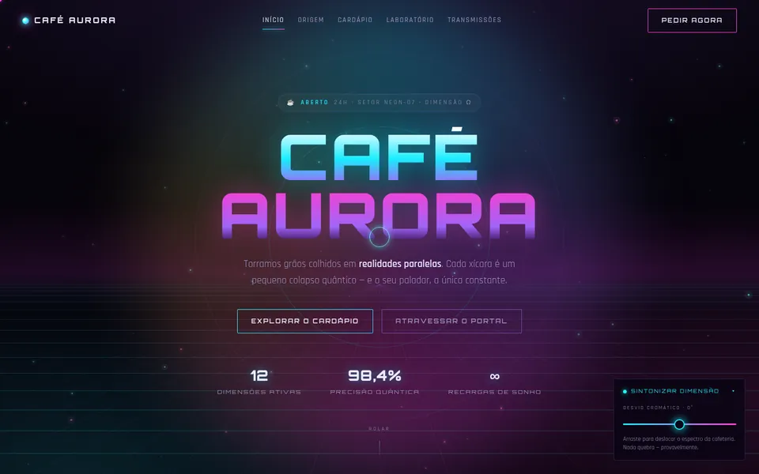

← Todos los proyectos
Web con efectos
Café Aurora
Cafetería cyberpunk que no existe, con pantalla de entrada, fondo animado, carta y un laboratorio para crear tu bebida.

El reto
En la asignatura de Desarrollo de Interfaces, se hizo el mismo encargo a tres IA: ChatGPT, Gemini y DeepSeek. El trabajo era elegir la mejor página, entender cada línea y rehacer el código a mano, sin perder ningún efecto.
Qué se hizo
- Una cafetería cyberpunk con pantalla de entrada, cursor propio, fondo de partículas, carta y un laboratorio para montar la bebida, con la taza dibujada solo con CSS.
- De 6:00 a 18:00 la web se convierte en la Panadería Aurora: otros colores, otra carta y un laboratorio de pan, elegidos por el reloj de quien visita antes de que aparezca la página.
- La misma página en tres versiones, CSS puro, Bootstrap y Tailwind, para comparar lo que cambia cada forma de escribir CSS.
- Una cafetería «de verdad»: pedido con cantidades y mensaje listo para WhatsApp, filtros y detalles en la carta, un test para elegir la bebida, reserva de mesa con validación al momento y tarjeta de sellos, también sin conexión.
- Es la web de ejemplo del simulador de Linu Sites: cada parte se enciende y se apaga allí, y el precio cambia con ella.
Por dentro
- 13 idiomas generados desde una sola plantilla, con las fuentes servidas por la propia web, sin CDN.
- Contraste AA de día y de noche y objetivos de al menos 24 px, comprobados con axe; con “reducir movimiento” activado, las animaciones se detienen.
- Solo acepta las órdenes del simulador cuando llegan desde la dirección de Linu Sites.
¿Quieres algo así para tu negocio?
Cuéntanos a qué te dedicas y qué imaginas. Puede ser solo una idea: la respuesta llega con preguntas y próximos pasos.